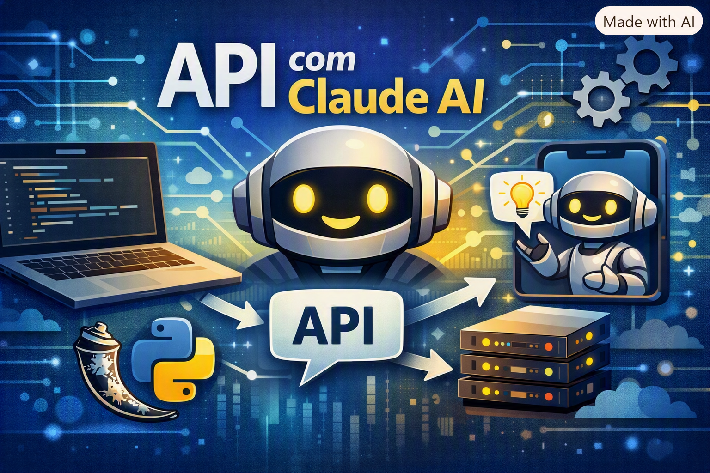

Um espaço com artigos, repositórios de código e playlists. Os itens abaixo são exemplos de layout — os links reais entram em breve.
Trabalho com desenvolvimento de soluções em software, mas o que realmente me move é ensinar. Cada projeto que construo carrega um pouco de sala de aula — gosto de entender o problema até o fundo para depois explicar de um jeito que faça sentido.
Por isso esse espaço existe: um lugar para compartilhar o que escrevo, o que construo e o que ensino sobre programação, TI e inteligência artificial.
⚠️ Artigos e repos abaixo são exemplos de layout — os links reais entram em breve. As playlists já são reais e levam direto ao meu canal no YouTube.
Um ensaio curto sobre construir rotinas que sobrevivem a dias ruins.
ExemploReflexões sobre remover em vez de adicionar, em software e no resto.
ExemploAs ferramentas que uso todos os dias e por que troquei as antigas.

Criando uma API própria integrada ao Claude AI do zero, com Python e Flask — direto ao ponto, sem pular etapas.
Aprendendo Go a partir do que já sei em Java, usando IA para resolver problemas de verdade — sem cair no vibecode.
Os tópicos essenciais para a certificação Solutions Architect Associate, com exemplos práticos e bastante hands-on.